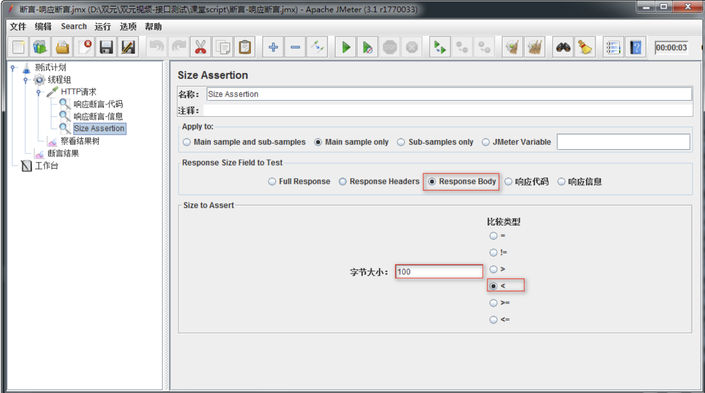
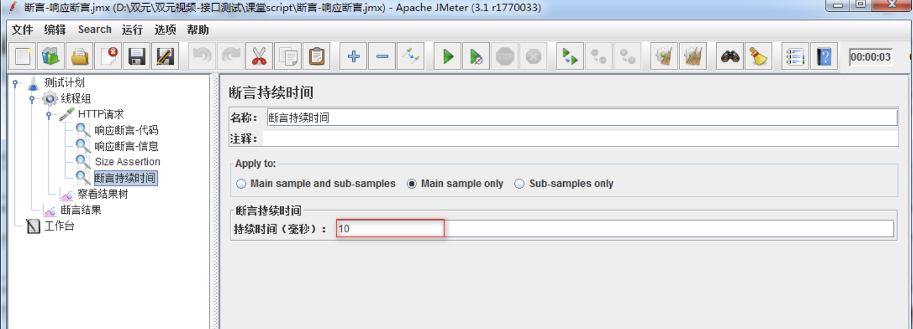

Jmeter断言
目标
- 了解什么是断言
- 了解常用断言分类
- 掌握响应断言组件使用
1. 断言概述
1.1 断言概念
概念：断言就是让程序代替人工去判断程序响应数据是否达到预期结果.
1.2 断言作用
在request的返回层面增加一层判断机制,检测是否符合预期,来保证测试过程中数据交互与预期是一致的.
1.3 断言的实现
1. 断言组件实现流程
- 在Sampler下增加对应的断言(不同类型的断言检查的内容不同)
- 配置响应的检查内容
- 添加监听器, 通过断言结果查看断言是否通过
- 通过断言,无显示
- 失败,除了输出请求失败外,还会输出失败原因
注意事项:
- 一个Sapmpler下可以添加多个断言,要根据需求添加断言,当所有断言都通过,那么请求才算成功
2. 常用断言组件分类
最新的3.x版本的jmeter中有13种断言,我们只简介常用的:响应断言、size assertion、Duration Assertion
2. 需求
1.查询学院-指定：http://127.0.0.1:8000/api/departments/T02/
让程序判断请求
1) 响应代码是否为200
2) 响应数据是否为T02资源
2. 使用断言判断需求1返回的主体数据大小是否小于100kb
3. 判断需求1返回的响应时间是否小于10ms
3. 响应断言
3.1 响应断言的作用对象
作用:判断响应的报文内容
作用对象包含: 响应文本、响应内容、响应状态码、响应信息等
3.2 解决方案
1. 测试计划-线程组
2. 线程组-HTTP请求
3. HTTP请求->断言->响应断言
4. 测试计划->监听器->察看结果树
5. 测试计划->监听器->断言结果
3.3 响应断言配置图
1.响应的状态吗

1. 响应代码: 只有选择响应代码，Jmeter才去拿预期结果和响应代码去对比
2. 要测试的模式：这里填写我们的预期结果；如：200
2.响应的数据

1. 响应文本：只有选择响应文本，Jmeter才去拿预期结果和响应数据去对比
2. 要测试的模式：这里填写我们的预期结果；如：T02
3.4 断言结果
断言成功,在结果树上默认不显示,断言失败,显示失败原因
4. Size Assertion(大小断言)
4.1 作用对象
作用:判断返回内容的大小,
作用对象包含: 全部响应、响应头部、响应主体、响应报文等等
4.2 解决方案
1. 测试计划-线程组
2. 线程组-HTTP请求
3. HTTP请求->断言->size assertion
4. 测试计划->监听器->察看结果树
5. 测试计划->监听器->断言结果
4.3 size assertion配置图

1. Response Body:选择此项判断返回主题数据Body的大小
2. 字节大小：设置要判断数值 单位bytes/kb
3. <:小于符号，说明判断要返回Body主题数据大小小于100kb
5. 断言持续时间--Duration Assertion
5.1 作用对象
作用: 断言服务器响应请求的时间是否小于指定值；
作用对象: 服务器
5.2 解决方案
1. 测试计划-线程组
2. 线程组-HTTP请求
3. HTTP请求->断言->duration assertion
4. 测试计划->监听器->察看结果树
5.3 持续时间配置图

1. 持续时间(毫秒)：这里的持续时间为毫秒，比如：10 毫秒。
2. 断言响应时间是否超过设置的值(10)，如果超过则断言失败，反之成功
6.总结
断言是使用程序代替人工进行检测程序的响应结果是否和预期一样. 各种不同的断言有不同的使用场景,要灵活使用不同断言.
1. 响应断言：断言响应代码/响应数据
2. Size Assertion：断言响应数据大小是否在指定范围
3. 断言持续时间：断言响应数据时间是否在指定时间范围